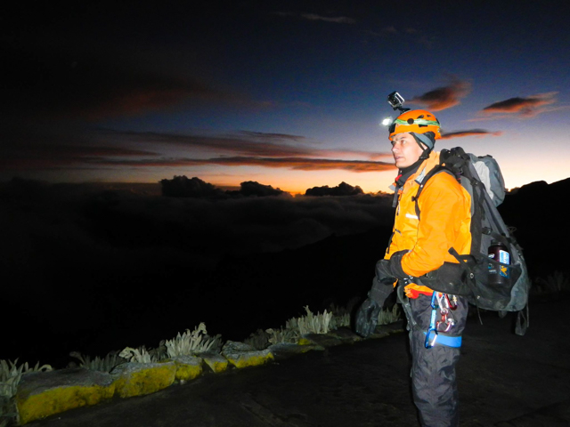

About me
I am originally from Ecuador, a beautiful paradise in South America. Last year, my wife and I made a life-changing decision to start fresh. Despite being university teachers, we felt a sense of boredom and something missing in our lives. This led us to embark on a new journey in a different country. We chose Canada as our destination to pursue our dream careers. Personally, I decided to follow my long-held interest in IMD
On August 17th, 2023, we landed in Canada and began our journey from scratch. Every step we take in this new life has been an adventure, whether it's making small adjustments or tackling significant challenges. Having my partner by my side to share in the joy, laughter, and occasional tears has made the experience even more fulfilling. We are fueled by our determination and unwavering work ethic, knowing that we are on the right path to accomplish great things in life.
“Without goals, and plans to reach them, you are like a ship that has set sail with no destination.” -Fitzhugh Dodson

Hobbies
- Mountain Climbing
- Scuba diving
- Running